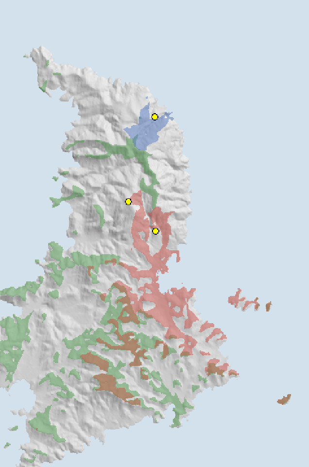
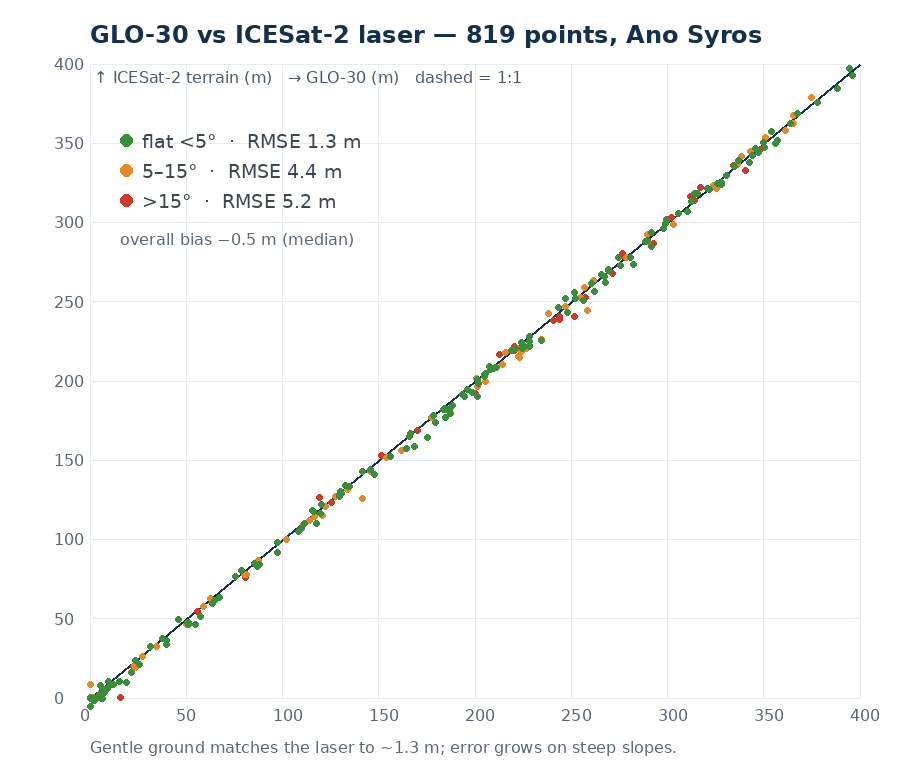

One hill holds the whole story of Syros — and it is a vertical story. A Catholic cathedral crowns the summit; a medieval defensive town spirals below it; an Orthodox hill stands beside it; and a 19th-century neoclassical port spills to the sea. Here, everything is read by its height above the water — geology, water, crops, climate, settlement, architecture and faith, each pinned to an altitude.
一座山丘承載了整個錫羅斯的故事——而這是一個垂直的故事。天主教主教座堂加冕於山頂； 中世紀防禦性聚落於其下盤旋；東正教的山丘並立於側；十九世紀的新古典港埠則傾瀉入海。 在此，一切皆以其海拔高度來閱讀——地質、水、作物、氣候、聚落、建築與信仰，各自繫於一個高程。
The section 剖面
A real elevation profile, cut from the Ermoupoli waterfront up to the San Giorgio summit (1,385 m long), with every layer of the place pinned at the height where it actually sits. Elevations are measured from the Copernicus 30 m DEM; the human and natural facts come from the cited research below.
一條真實的高程剖面，自埃爾穆波利海濱切至聖喬治山頂（長 1,385 公尺），將此地的每一層都標注在其實際所在的高度。 高程取自 Copernicus 30 公尺數值高程模型；人文與自然事實則來自下方所引研究。
Read by altitude, summit to sea 由頂至海，逐高程解讀
The island's roof 島之屋脊
Syros culminates at Pyrgos (442 m) in the north — far above Ano Syros.86 This high country is open phrygana and grassland (our DEM+land-cover analysis: 85% grass, 13% shrub, <1% built in the 250–442 m band), grazed and meltemi-swept.D
錫羅斯最高點為北部的皮爾戈斯（442 公尺），遠高於上錫羅斯。此高地為開放的低灌叢（phrygana）與草地（本文 DEM＋土地覆蓋分析：250–442 公尺帶中草地 85%、灌叢 13%、建成 <1%），供放牧且飽受季風吹拂。
San Giorgio — the Catholic summit 聖喬治 — 天主教之巔
The Roman Catholic Cathedral of Saint George crowns the very top of the cone (our DEM: ~171 m).D First built in 1208, destroyed and rebuilt three times (last major rebuild 1834), it has been the seat of the Catholic Diocese of Syros & Milos since 1652.79 It is the apex of the settlement's spiral plan and the most meltemi-exposed point of the town.
羅馬天主教聖喬治主教座堂加冕於錐形山丘的最頂（本文 DEM：約 171 公尺）。初建於 1208 年，三度毀而重建（最後大規模重建於 1834 年），自 1652 年起為錫羅斯與米洛斯天主教教區的主教座。此為聚落螺旋佈局的頂點，也是全鎮最受季風吹襲之處。
The medieval Catholic town 中世紀天主教城
Below the cathedral spirals Ano Syros proper — a dense, defensive Cycladic fabric of narrow winding stepped lanes, vaulted arches (stegádi) and a radial, concentric plan built against pirate raids from the 13th century.7 Built by the Venetians after Marco Sanudo took Syros in 1207.8 Our building analysis finds ~400 structures above 140 m — small, tight, and high. Birthplace of Markos Vamvakaris, "patriarch of rebetiko" (1905).12
主教座堂之下盤旋著上錫羅斯本體——密集而具防禦性的基克拉澤斯肌理：狹窄蜿蜒的階梯巷弄、拱券（stegádi），以及自 13 世紀為抵禦海盜而建的放射同心佈局。1207 年馬可·薩努多取錫羅斯後由威尼斯人所建。本文分析發現140 公尺以上約有 400 棟建物——小巧、緊湊而高聳。此地為馬爾科斯·瓦姆瓦卡里斯（雷貝提卡之父，1905 年生）的出生地。
Vrontado — the Orthodox hill 弗龍塔多 — 東正教之丘
On the adjacent hill, the Greek Orthodox Church of the Resurrection (Anástasis) sits at ~121 m (our DEM).D The island's defining social fact is written in this vertical, side-by-side geometry: Catholics on the older, higher San Giorgio cone; Orthodox on Vrontado and, later, the port.12
相鄰山丘上，希臘東正教復活教堂（Anástasis）坐落於約 121 公尺處（本文 DEM）。此島最具定義性的社會事實，正書寫於這垂直並置的幾何之中：天主教徒居於較古老、較高的聖喬治錐丘；東正教徒則居於弗龍塔多，及後來的港埠。
Terraced slopes & phrygana 梯田坡地與低灌叢
Between town and summit the settlement thins and the land turns to dry-stone terraces and scrub. In our land-cover analysis, built-up cover falls from ~8% (50–100 m) to ~1% (150–250 m) while shrub/phrygana rises from 13% to 20% with height.D Water is the constraint everywhere: Syros has the lowest rainfall in the Cyclades (~400 mm/yr, 86% in Oct–Mar), so cisterns and rainwater harvesting were essential.10
介於城與頂之間，聚落漸疏，地表轉為乾砌石梯田與灌叢。本文土地覆蓋分析中，建成覆蓋由約 8%（50–100 公尺）降至約 1%（150–250 公尺），而灌叢／phrygana 隨高度由 13% 升至 20%。水始終是限制：錫羅斯雨量為基克拉澤斯最低（年約 400 公釐，86% 落於 10 月至翌年 3 月），故蓄水池與雨水收集不可或缺。
Miaouli Square — the neoclassical city 米亞烏利廣場 — 新古典之城
At the foot, ~13 m above the sea (our DEM), lies the marble heart of Ermoupoli — grand 19th-century neoclassical architecture (town hall, theatre, mansions) that could not contrast more sharply with the whitewashed medieval hill above.D8
於山腳、海拔約 13 公尺處（本文 DEM），是埃爾穆波利的大理石心臟——宏偉的十九世紀新古典建築（市政廳、劇院、宅邸），與其上刷白的中世紀山丘形成最強烈的對比。
The refugee port — the vertical migration 難民港 — 垂直的遷徙
Ermoupoli was built new, at sea level, in the 1820s by Greek War of Independence refugees from Chios, Psara, Kasos and beyond — reaching ~13,800 people by 1828.8 This is the hinge of the whole place: as piracy gave way to trade, the centre of gravity migrated down the hill — from the defensive medieval summit to the commercial sea-level port. Our data records it: ~3,485 of 5,628 buildings sit in the lowest 0–60 m.D
埃爾穆波利於 1820 年代由希臘獨立戰爭中來自希俄斯、普薩拉、卡索斯等地的難民於海平面全新建立，至 1828 年已達約 13,800 人。此乃全地之樞紐：當海盜讓位於貿易，重心沿山而下遷移——由防禦性的中世紀山頂，移向商業的海平面港埠。本文數據為證：5,628 棟建物中約 3,485 棟位於最低的 0–60 公尺。
Groundwater 地下水
Below the surface, historic wells reached groundwater at an estimated ~8–10 m depth; Syros is said to have had the densest network of cisterns and wells of any Cyclades island. Today those are largely disused and ~95% of water comes from desalination.5
地表之下，歷史水井於約 8–10 公尺深觸及地下水；據稱錫羅斯曾擁有基克拉澤斯諸島中最密的蓄水池與水井網。如今多已廢棄，約 95% 用水來自海水淡化。
Cycladic Blueschist — the stone under everything 基克拉澤斯藍片岩 — 萬物之下的石
The entire hill stands on the Cycladic Blueschist Unit — marbles, metapelites and metabasites carried to high-pressure/low-temperature metamorphism ~50–35 Ma in a subduction zone, then exhumed. Syros is one of the world's best-preserved fossil subduction systems and the type locality of the mineral glaucophane (Hausmann, 1845).14 This marble is the building stone of the churches and the terraces alike.
整座山丘立於基克拉澤斯藍片岩單元之上——大理岩、變泥質岩與變基性岩，於約 5000–3500 萬年前在隱沒帶中經歷高壓低溫變質，其後抬升。錫羅斯是世上保存最佳的化石隱沒系統之一，也是藍閃石的模式產地（Hausmann, 1845）。此大理岩既是教堂、也是梯田的建材。
The vertical fingerprint, in data 垂直指紋（數據）
Two readings of the hill by height, computed from the Copernicus DEM with OpenStreetMap buildings and ESA WorldCover. Left: where the town actually sits. Right: how the living surface changes with altitude.
A dense mass at 0–60 m (Ermoupoli, 19th c) with a persistent tail to 180 m (medieval Ano Syros). 0–60 公尺的密集主體（埃爾穆波利，19 世紀）加上延伸至 180 公尺的持續尾部（中世紀上錫羅斯）。
Built-up cover peaks low and fades with height; open phrygana/grass takes over the heights. 建成覆蓋在低處達峰、隨高度消退；開放的灌叢／草地佔據高處。
The layers in full 各層詳述
1 · Geology 地質
The whole of Syros is built on the Cycladic Blueschist Unit — mainly marbles, metapelites and metabasites that reached high-pressure/low-temperature metamorphism ~50–35 Ma through the subduction of the Apulian microcontinent, then were exhumed by post-orogenic extension.14 Its preservation is world-class: peer-reviewed work calls Syros "one of the world's best-case studies of a fossilized subduction system," and it is the type locality of glaucophane, the blue mineral that gives blueschist its name (Hausmann, 1845).1 The marble outcrops are literally the material of the settlement — cut for churches, walls and terraces.
2 · Water & climate 水與氣候
Syros is dry — the lowest precipitation of the studied Cyclades (~400 mm/yr, ~86% Oct–Mar), with small catchments and little surface run-off, so drought vulnerability is acute and worst in the summer peak.10 Historically the island answered this with the densest cistern-and-well network of the Cyclades, groundwater at ~8–10 m; today ~95% of supply is desalinated.5 Summers are governed by the Meltemi, a cool dry north wind of July–August that holds maxima at or below ~30 °C11 — the exposed hilltop is meltemi-swept, part of why a summit town was liveable.
3 · Agriculture & vegetation, by altitude 農業與植被（按高程）
The requested altitude-banding of land use is not well documented in the literature, so we measured it directly (Copernicus DEM + ESA WorldCover): built-up land concentrates low (~19% of the 0–50 m band) and all but vanishes above 150 m, while grassland and phrygana shrub dominate and increase with height — grass reaching ~85% in the 250–442 m band.D The pattern matches the classic Cycladic vertical land economy: gardens and denser tree cover in the sheltered low valleys, dry-stone terraces on the mid-slopes, and open grazing on the wind-blown heights.
4 · Urban history — the vertical migration 城市史 — 垂直遷徙
Ano Syros was founded in the early 13th century as a fortified hilltop — Venetian, Catholic, defensive — after Marco Sanudo captured Syros in 1207 and folded it into the Duchy of the Archipelago.78 For six centuries, height meant safety from pirates. Then, in the 1820s, everything inverted: Greek War of Independence refugees built a brand-new city, Ermoupoli, at sea level, which boomed into Greece's leading 19th-century port.8 The settlement's centre of gravity slid down the hill — the clearest possible reading of history as altitude.
5 · Morphology & architecture 形態與建築
Ano Syros is a textbook Cycladic kastro: densely built, with narrow winding stepped lanes, vaulted passages (stegádi) and a radial, concentric plan that spirals up the cone to the cathedral — a defensive amphitheatre.7 Materially and formally it is the opposite of the city below: whitewashed vernacular stone climbing a hill versus the marble neoclassicism of Ermoupoli on the flat. The two architectures are separated by ~170 vertical metres and six hundred years.
6 · People & faith 人與信仰
The hill encodes a religious geography: Ano Syros is Catholic (the "Frangosyrianoi," of Venetian/Genoese descent), the seat of the Roman Catholic Diocese, while Ermoupoli and Vrontado are Orthodox.712 The two communities live literally at different heights on adjacent hills. From this Catholic quarter came Markos Vamvakaris (b. 1905), the "patriarch of rebetiko" — the island's most famous son, born to a poor Catholic family on the summit town.12
Terrain analysis — testing the hypotheses 地形分析 — 檢驗假說
Proper geomorphometry, computed from the Copernicus GLO-30 DEM in metric UTM 35N. (Hellenic Cadastre LiDAR would be sharper, but it is paywalled and not openly accessible; at 30 m these results carry a few-metre uncertainty.) Three questions: what shape is the island, does the citadel band read as defensive, does Ano Syros really shelter from the meltemi, and do the high points actually "command" what they are said to.
以公制 UTM 35N、由 Copernicus GLO-30 數值高程模型進行的地形計量。（希臘地籍局光達更精細，但需付費且未公開；30 公尺解析下結果有數公尺不確定性。） 三個問題：島嶼是何種形態、「城堡帶」是否呈防禦性、上錫羅斯是否真正避開季風、以及各高點是否真如所言「控制」其視域。
1 · Hypsometry & aspect 高程分佈與坡向
Concave, low curve → an old, worn island. 下凹且低的曲線 → 老年、侵蝕的島嶼。
Terracotta = leeward of the N meltemi. 赭色 = 北風季風的背風面。
The island is geomorphically old. The hypsometric integral is HI = 0.25 — a low, concave curve that signals a mature, heavily dissected landform (mean elevation 108 m against a 439 m maximum; 82.4 km² of land). The "citadel band" of 100–180 m holds 24% of the land (20.1 km²) — a broad, defensible mid-height shelf, exactly where Ano Syros, Kastri and the old inland hamlets sit.D
The shelter claim is confirmed, decisively. Of the sloping ground within 550 m of San Giorgio, 64% faces E–SE–S and only ~4% faces N–NE–NW — the settlement turns its back on the northerly meltemi almost completely (0% due-north-facing). The hilltop was not just defensive; it was aerodynamically chosen.D
此島在地形上屬老年：高程積分 HI = 0.25——低而下凹的曲線，顯示成熟、深切的地貌（平均高程 108 公尺，最高 439 公尺；陸地 82.4 平方公里）。100–180 公尺的「城堡帶」佔陸地 24%（20.1 平方公里）——一道寬闊、可防禦的中高度台階，正是上錫羅斯、卡斯特里與內陸古村落所在。避風之說得到決定性證實：聖喬治周邊 550 公尺內的坡地中，64% 朝東—東南—南，僅約 4% 朝北—東北—西北，聚落幾乎完全背對北向季風。
2 · Viewsheds — the "visual command" hypothesis 視域 — 「視覺控制」假說

| Observer | Elev. | Island land seen | In-frame sea seen | Uniquely commands |
|---|---|---|---|---|
| San Giorgio (Ano Syros citadel) | 171 m | 13% | 22% | the Ermoupoli port |
| Kastri (Early Bronze Age acropolis) | 154 m | 2% | 30% | the northern sea approach |
| Pyrgos (natural summit) | 436 m | 20% | 40% | the widest panorama |
The hypothesis is refined, not simply confirmed. No single point commands the island — the three are mutually invisible (each sits on a different flank of the dissected central ridge), and together they see only ~30% of the land. But each dominates a strategically distinct sector, and the pattern is legible:
- San Giorgio / Ano Syros is the only one of the three that sees the Ermoupoli harbour — the medieval citadel watches its own maritime gateway and the settled east coast, not the whole island.
- Kastri sees almost no land (2%) but a third of the sea — a pure maritime sentinel over the northern approaches, exactly the role an Early Bronze Age fortified acropolis would need.
- Pyrgos, the natural summit, commands the widest view (20% land, 40% sea) yet was never the settlement — height for surveillance, not for living.
So "visual command" on Syros is sectoral: defensive siting chose the hill that watched what mattered to that community — the port for medieval Ano Syros, the sea-lanes for Bronze-Age Kastri — rather than a single dominating acropolis or an intervisible signalling chain.D
假說被修正，而非單純證實。無單一高點可控制全島——三者彼此不可見（各據深切中央山脊的不同側翼），合計僅見約 30% 陸地。然各自主宰一個策略性區塊：聖喬治／上錫羅斯是三者中唯一能俯瞰埃爾穆波利港者——中世紀城堡監看自身的海上門戶；卡斯特里幾乎不見陸地（2%）卻見三分之一海域——純粹的北方海路哨站，正合青銅時代要塞之需；皮爾戈斯（天然峰頂）視野最廣，卻從非聚落所在——高度用於瞭望，而非居住。故錫羅斯的「視覺控制」是分區的：防禦選址各取其所需監看之處，而非單一霸權衛城。
3 · How precise is the 30 m DEM? — validated with laser 30 公尺 DEM 有多準？以雷射驗證
Is anything better than 30 m available for Syros? I checked: no free, gridded DEM finer than 30 m is openly downloadable. The Hellenic Cadastre holds 2 m & 5 m national DEMs but they are restricted/paywalled (no public LiDAR, by policy); Copernicus 10 m (EEA-10) is Public-Authorities-only; TanDEM-X 12 m is free only via a research proposal. But one genuinely precise free source exists — NASA's ICESat-2 laser altimeter (decimetre accuracy) — and its ground tracks cross this hill. So rather than replace the DEM, I used it to measure how good the 30 m DEM actually is.

The 30 m DEM is trustworthy where it counts. On gentle ground (<5°, the majority) it matches the decimetre laser to RMSE 1.3 m with near-zero bias — so every elevation figure on this page (San Giorgio ~171 m, Vrontado ~121 m, the citadel band, Miaouli ~13 m) is good to a metre or two. Error grows to ~4–5 m RMSE on slopes >15°, where a 30 m grid cannot resolve the sharp cone, and there is a small ~0.5–1 m positive bias over the built quarter (GLO-30 is a surface model, catching rooftops against the laser's bare earth). The upshot: the numbers hold; the steep-slope morphology and finest viewshed detail are where 30 m limits us — exactly what Cadastre LiDAR or a commissioned survey would sharpen.I
是否有比 30 公尺更精細的資料？經查：無可自由下載、成網格且優於 30 公尺的 DEM。希臘地籍局藏有 2 公尺與 5 公尺全國 DEM，但受限／付費（依政策不公開光達）；Copernicus 10 公尺（EEA-10）僅限公部門；TanDEM-X 12 公尺僅經研究申請免費。惟有一真正精確的免費來源——NASA ICESat-2 雷射測高（分米級精度），其地面軌跡正好越過此山丘。故我以其量測 30 公尺 DEM 的實際精度：於緩坡（<5°）與雷射相符達 RMSE 1.3 公尺、近乎零偏差——本頁各高程值準確至一兩公尺；於 >15° 陡坡誤差增至約 4–5 公尺；於建成街區另有約 0.5–1 公尺正偏差。結論：數值可靠；陡坡形態與最精細的視域細節正是 30 公尺的極限。
Sources & honesty 來源與誠實聲明
何者為實測、何者為引用。本頁的高程（聖喬治約 171 公尺、復活教堂／弗龍塔多約 121 公尺、米亞烏利約 13 公尺，以及建物與土地覆蓋各帶）為本文自 Copernicus GLO-30 DEM、ESA WorldCover 與 OpenStreetMap（經 Google Earth Engine）之實測——因已出版來源幾乎未提供此山丘的確切公尺數（僅皮爾戈斯 442 公尺與海平面的埃爾穆波利通過查證）。DEM 高程有數公尺不確定性。人文與自然事實取自所引來源並經對抗式查核；地質基於同儕審查的一手文獻，聚落／建築／文化則多依維基百科及佐證來源。其中「天主教社群僅始於 16 世紀」之說已被駁斥；該聚落的拉丁／天主教性質可追溯至 13 世紀。
- Geological Heritage of Syros Island — Geosciences (MDPI), 2021 primary · high
- EGU — Fragments of oceanic crust on Syros, 2023
- Herpetozoa / Pensoft — Syros island profile (area, water, groundwater) medium
- Greeka — Syros geography
- Wikipedia — Ano Syros
- Wikipedia — Syros (Pyrgos 442 m; Ermoupoli 1820s)
- Wikipedia — St George's Cathedral, Ano Syros
- European Water 47 (2014) — Syros drought & water scarcity primary · high
- Climates to Travel — Syros climate / Meltemi
- Wikipedia — Markos Vamvakaris
- Author's spatial analysis — Copernicus GLO-30 DEM, ESA WorldCover 2021, OpenStreetMap buildings, via Google Earth Engine (elevations, transect, building & land-cover altitude bands, hypsometry, aspect, viewsheds). measured
- DEM validation — NASA ICESat-2 ATL08 land-terrain heights (819 points) vs GLO-30, geoid-corrected with EGM2008; finer-DEM availability per Copernicus, Hellenic Cadastre & TanDEM-X (DLR). measured